OccupancyNet
Abstract: This report presents a comprehensive analysis of OccupancyNet, a learned neural network controller for autonomous navigation, evaluated against a classical MPPI baseline. A critical focus of this work is the successful sim-to-real pipeline: the model is extensively trained on procedurally generated, highly diverse warehouse environments within NVIDIA Isaac Sim, and subsequently deployed and validated in real-world scenarios on an NVIDIA Jetson-powered physical robot. The document details the simulated data collection methodology, the hybrid two-stream neural architecture (ResNet-18 for spatial feature extraction and a State MLP for kinematic encoding), and empirical results encompassing trajectory deviation, cross-track error, and edge hardware utilization.
Background & Motivation
The controller architecture draws inspiration from the reactive visual navigation strategy demonstrated in MASt3R-Nav, mainly, its Pixel-React Controller and cost-to-go navigation formulation.
In MASt3R-Nav, visual goal conditioning is framed around an explicit cost-to-go potential field, allowing a local policy to translate high-level routing goals into immediate, kinematically sound actions without getting trapped in local minima. Adapting this insight to an ego-centric spatial domain, our system represents global routing as an explicit Cost-to-Go potential field derived from the global planner. By treating global intent as a continuous potential landscape rather than sparse, discrete targets, the network is conditioned to trace the steepest descent path (the “least-cost valley”) toward the goal.
Data Collection Methodology
Procedural Environment Generation in Isaac Sim
To ensure our learned controller was trained and evaluated on a diverse set of navigation scenarios, the data collection environment was procedurally generated within Isaac Sim:
- Base Layout Generation: The pipeline begins with generative map configurations that build the foundational warehouse structure, establishing fixed boundaries, distinct rooms, and large static infrastructure.
- Procedural Clutter & Obstacles: To simulate realistic, unpredictable environments, a secondary generation step dynamically spawns modular pallets, crates, and varied clutter across the map.
- Dynamic Scenario Creation: By randomizing the placement, rotation, and density of these obstacles per session, we create highly complex, varied spaces that rigorously test the robot’s spatial awareness and obstacle avoidance capabilities.
- Navigation Task: Within these procedurally generated configurations, the simulated Nova Carter robot systematically navigated between predefined pairs of valid, open points to gather comprehensive movement data.
Robot Deployment & Hardware Setup
When deploying our autonomous navigation stack to the actual robot hardware the system runs across a set of containerized environments:
- PyTorch Inference Container: A dedicated Docker container optimized for NVIDIA Jetson devices running PyTorch. This environment loads the trained OccupancyNet model and serves inference via a lightweight ZMQ-based messaging architecture, allowing high-throughput, low-latency neural network predictions independent of ROS overhead.
- ROS 2 Dev Container: The primary navigation and hardware interface layer. This container runs the ROS 2 middleware, handling all sensor ingress, transform (TF) broadcasting, and the overarching behavior tree.
- DLIO (Direct LiDAR-Inertial Odometry): To achieve robust, high-frequency state estimation in complex environments, we utilize DLIO. It fuses high-density 3D LiDAR point clouds with high-rate IMU data, providing the robot with extremely accurate and smooth odometry—critical for both the classical controller and OccupancyNet to maintain stability.
- ICP (Iterative Closest Point) Localization: For global map registration, ICP is run on the LiDAR scans to match the robot’s local frame against the prior global map. This corrects any long-term odometric drift accumulated by DLIO, ensuring the robot’s pose stays precisely aligned with the global costmaps.
- Nav2 Stack Configuration: The ROS 2 Navigation stack is configured with a custom hybrid pipeline. While the global planner computes the long-range path to the goal, the standard Nav2 MPPI local controller is bypassed/bridged so that the neural network predictions from the PyTorch container can be executed directly as velocity commands to the base hardware.
During these automated benchmarking trials, a comprehensive suite of navigation data was recorded to ROS 2 bag files (stored in the recordings and recordings_big directories). This telemetry forms the foundation of the dataset used to train the src4 OccupancyNet model. The key data modalities collected include:
- Local Costmap: A 2D spatial grid centered on the robot, capturing the immediate obstacle environment derived from simulated LiDAR data. This provides the model with critical localized spatial awareness for collision avoidance.
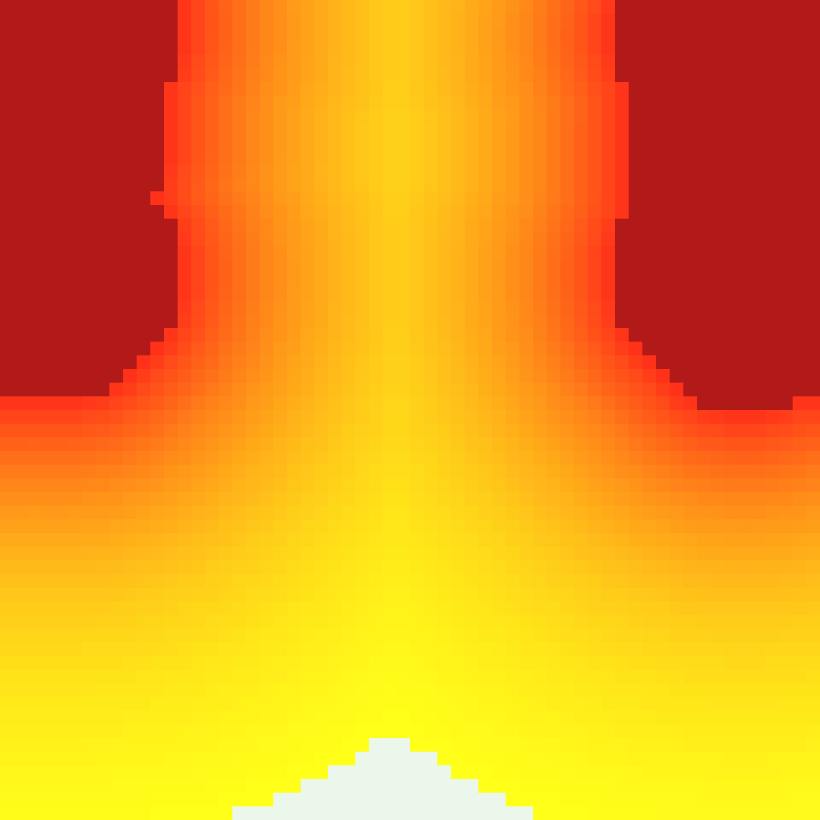
Local Costmap visualization from Zarr dataset
- Cost-to-Go Map: A heuristic grid generated by the global planner, indicating the estimated navigational cost or distance from any given cell to the target goal. This map provides a gradient that guides the local controller towards the long-term objective, helping it navigate around large obstacles and avoid local minima.
Cost-to-Go Map heuristic grid
- Goal Mask: A binary spatial mask highlighting the position of the immediate navigational waypoint. This directs the neural network’s attention toward the intended target relative to its current pose.
Goal Mask visualization directing neural attention
- Global Path (Waypoints): The sequence of planned poses generated by the Nav2 global planner. This path provides a macro-level trajectory that the local controller attempts to follow while negotiating dynamic local constraints.
- Odometry & Kinematics: High-frequency data regarding the robot’s current linear and angular velocities, as well as its precise pose relative to the map frame. This state information allows the model to condition its predictions on its current dynamic momentum.
- Control Actions (Ground Truth): The commanded linear and angular velocities produced by the Classical MPPI controller. For the behavioral cloning of the
src4 model, these actions serve as the target labels that the neural network learns to predict given the sensory and planning inputs.
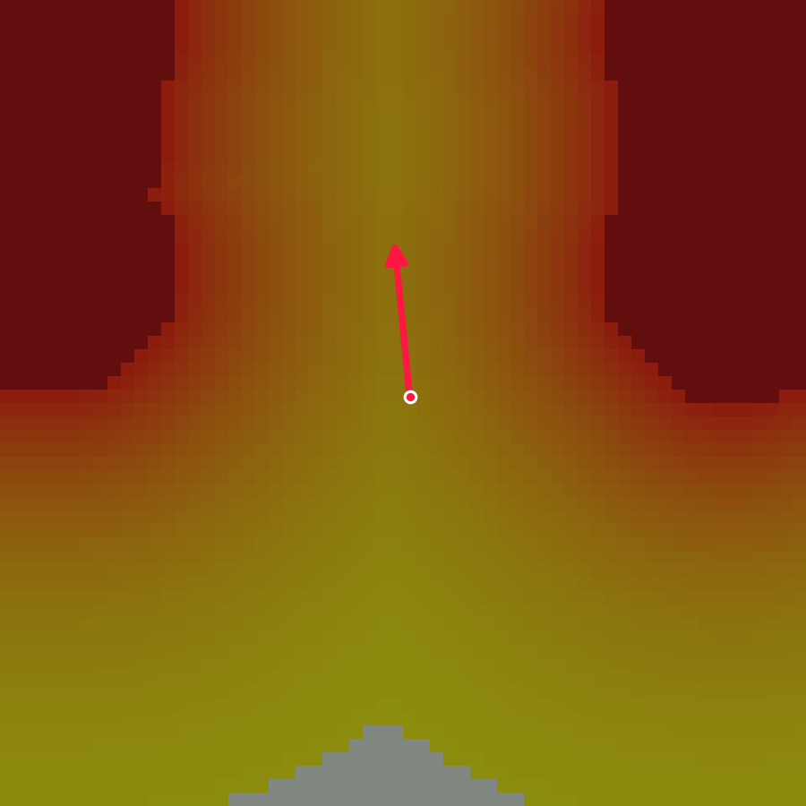
Robot linear and angular velocity commands (v, ω) represented as a red arrow
The map below illustrates the pairs of navigable points (denoted by green dots) used during these data collection trials, alongside a video demonstrating the collection process in action:
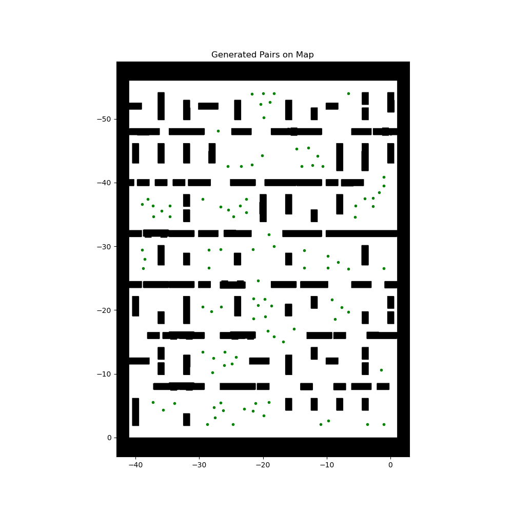
Navigable Point Pairs
OccupancyNet Architecture & Design Rationale
To accurately predict the necessary control trajectory, our OccupancyNet model employs a hybrid, two-stream neural architecture designed to separate spatial understanding from kinematic state representation before performing late fusion.
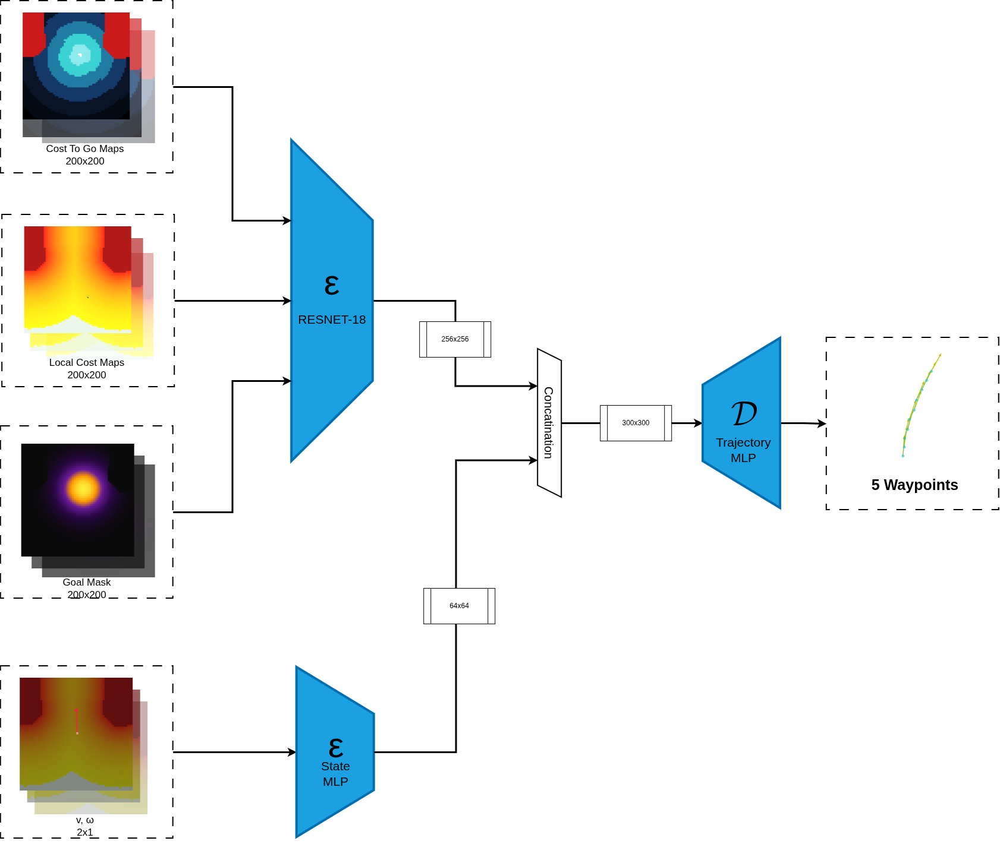
OccupancyNet Architecture
What the Model is Doing
- Spatial Feature Extraction: The model ingests a 3-channel image tensor (3 x H x W) composed of the Local Costmap, the Cost-to-Go Map, and the Goal Mask. This stacked spatial representation is passed through a ResNet-18 backbone, which acts as a powerful spatial feature extractor. The output is flattened into a 256-dimensional spatial embedding.
- Kinematic State Encoding: Concurrently, the robot’s current velocities (vx, vy, ω) are fed into a separate State MLP (Multi-Layer Perceptron), yielding a 64-dimensional kinematic state embedding.
- Late Fusion: The spatial embedding (256-d) and the state embedding (64-d) are concatenated to create a dense 320-dimensional vector in a process known as late fusion.
- Trajectory Prediction: This fused context vector is then passed through a final Trajectory MLP, which regresses the predicted local trajectory (a sequence of K waypoints, e.g., 5 waypoints).
Why We Chose This Architecture
- ResNet-18 for Robust Spatial Understanding: Navigation relies heavily on understanding complex, unstructured environments (e.g., tight corners, cluttered obstacles). ResNet’s residual connections allow it to learn deep, robust, hierarchical representations of the costmap efficiently without suffering from vanishing gradients.
- Separation of Concerns (Two-Stream Approach): By processing the spatial maps and the kinematic state independently, the network prevents the low-dimensional velocity data from being “washed out” or overpowered by the high-dimensional image data during early feature extraction.
- Late Fusion for Momentum Conditioning: Fusing the embeddings at the very end allows the model to first understand where it is and where it needs to go (spatial), and then condition that spatial plan on its current momentum (state). This ensures the predicted trajectory respects the physical constraints of the robot (e.g., preventing it from predicting physically impossible immediate sharp turns when the robot is moving at high speeds).
1. High-Level Insights
- Adherence to Target (Cross-Track Error): We measured how much the robot veered off the global plan by calculating the average minimum distance (AMD) between the actual traversed path (odom) and the target global plan.
- Speed Robustness: We explicitly isolated the high-speed traversal (0.6 - 0.9 m/s) to verify stability.
- Rollout Variance: The standard deviation (SD) of point-by-point discrepancies between the OccupancyNet and Classical predictions was calculated across all of these runs simultaneously to see how variance scales along the rollout horizon.
Results
Here are the recorded evaluation runs of the deployed robot:
2. Overall Trajectory Deviation SD (Across All Analyzed Runs)
The following graph visualizes the Standard Deviation of the absolute distance between OccupancyNet’s predicted waypoint and the Classical MPPI’s predicted waypoint, indexed from the start of the horizon (Waypoint 1) to the end (Waypoint 20).
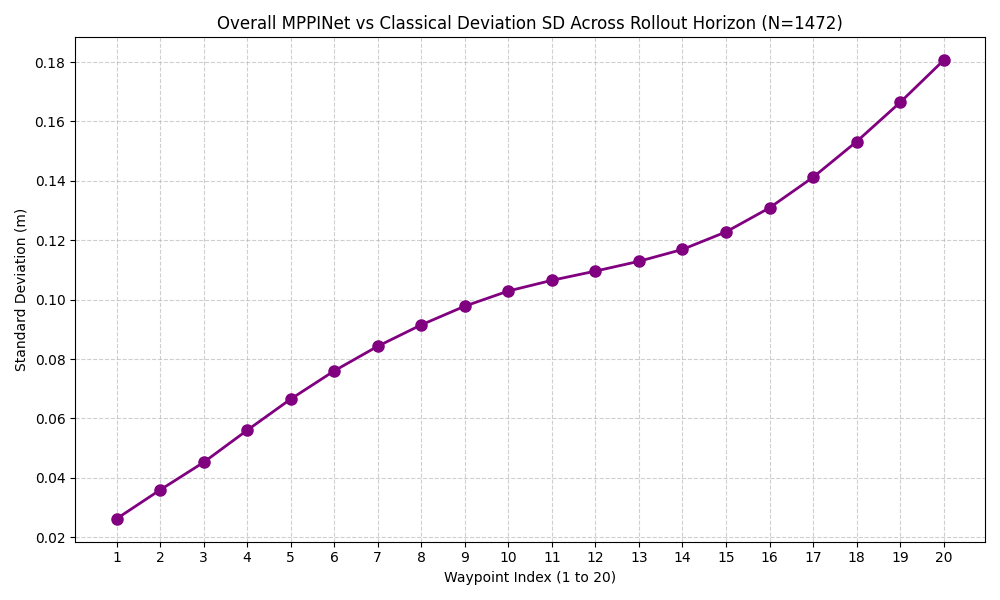
Overall SD Graph
Insight: As the waypoint index increases (looking further into the future of the rollout horizon), the standard deviation naturally scales up. The model is extremely confident and accurate up to Waypoint 12 (~0.1m SD), after which the uncertainty compounds slightly but remains remarkably bounded below 0.2m at the very end of the horizon.
3. Deviation Profile of Individual Runs
Here are a few deeper dive statistical plots from specific runs showing how the first waypoint tracks over time, and how the mean/median deviation diverges along the horizon:
Normal Run - rosbag2_2026_09_18-16_11_41 (Run 2)
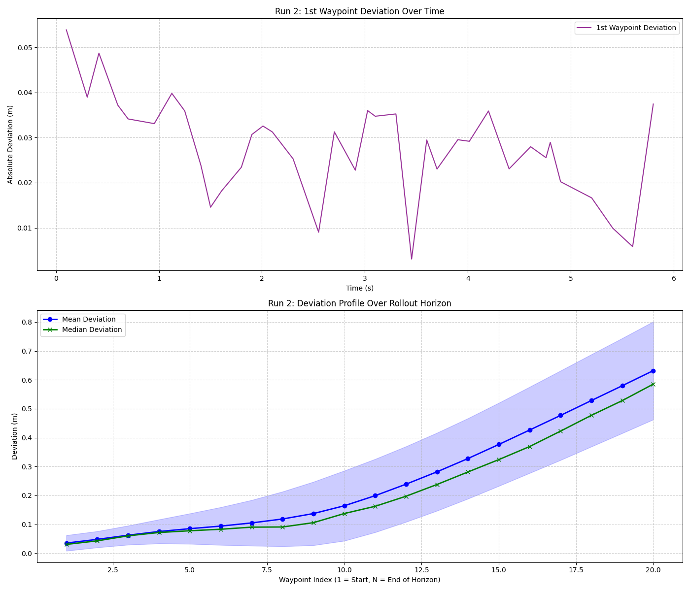
Deviation Stats 1
High Speed Run - rosbag2_2026_09_17-16_05_46 (Run 2)
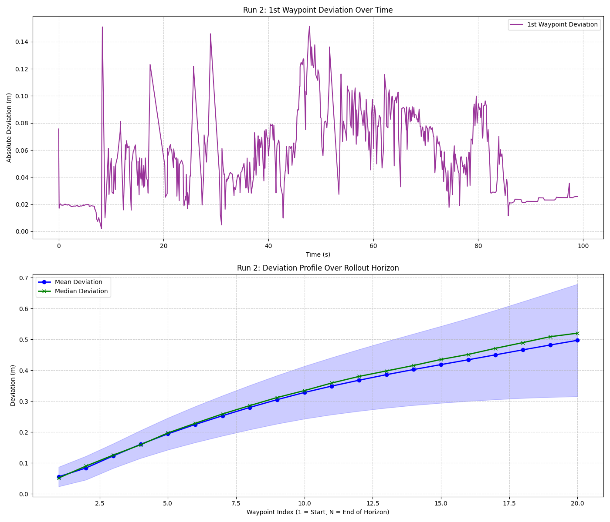
Deviation Stats 2
Normal Run - rosbag2_2026_09_17-16_36_50 (Run 1)
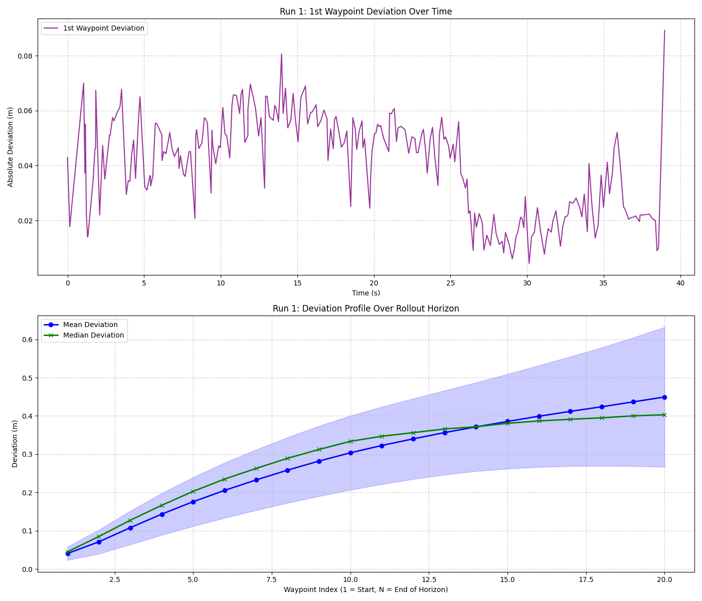
Deviation Stats 3
4. Spatial Trajectory Comparisons
rosbag2_2026_09_17-16_42_25 (Run 1) - Normal Run 1
- Average Veering off Global Path (Odom -> Plan):
0.0658 meters
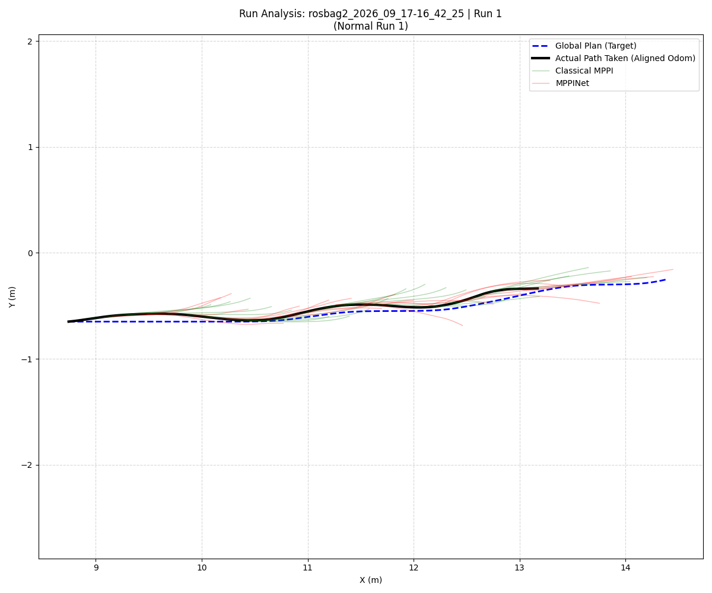
Run Spatial
rosbag2_2026_09_18-16_11_41 (Run 2) - Normal Run 2
- Average Veering off Global Path (Odom -> Plan):
0.0543 meters
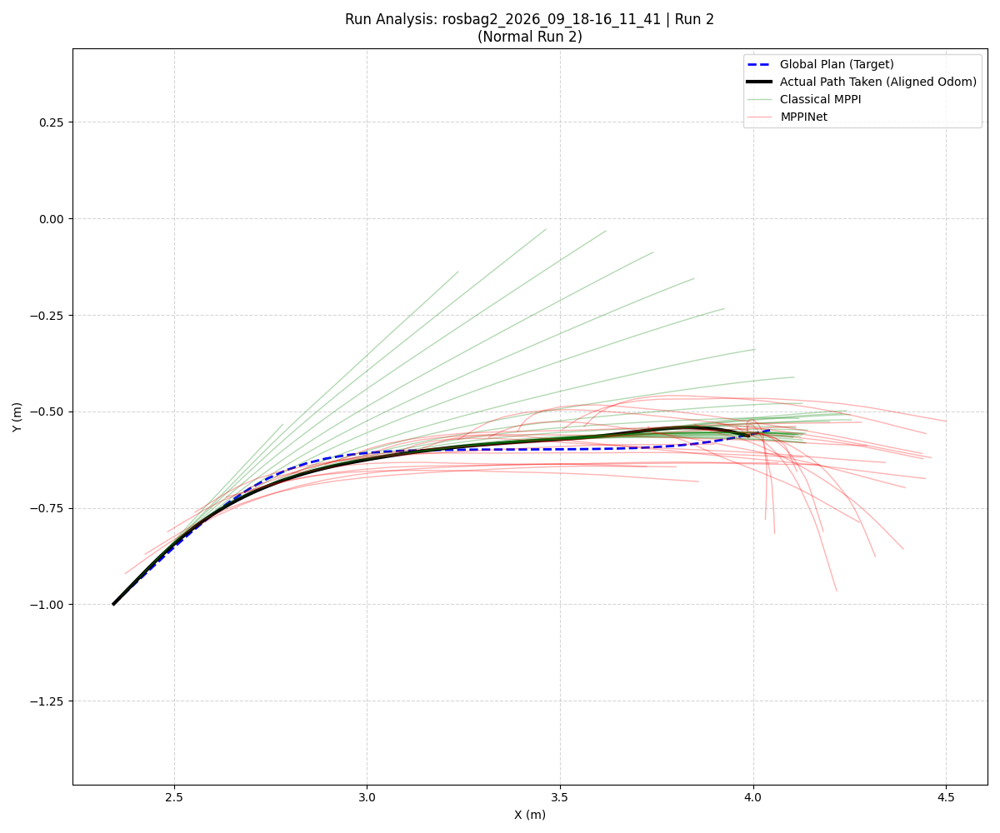
Run Spatial
rosbag2_2026_09_17-16_36_50 (Run 1) - Normal Run 1
- Average Veering off Global Path (Odom -> Plan):
0.0487 meters
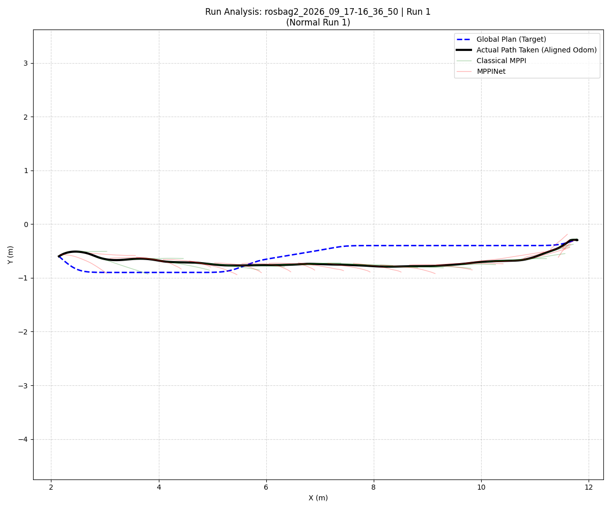
Run Spatial
rosbag2_2026_09_17-16_36_50 (Run 2) - Normal Run 2
- Average Veering off Global Path (Odom -> Plan):
0.0763 meters
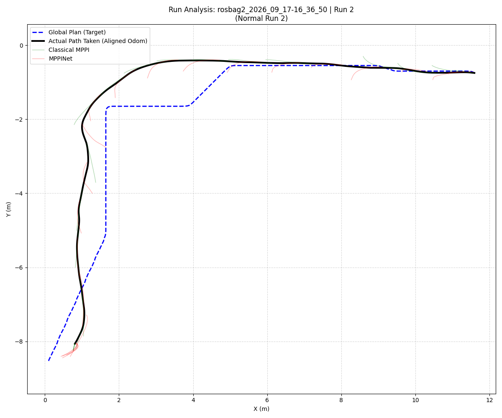
Run Spatial
rosbag2_2026_09_17-16_05_46 (Run 2) - High Speed Run (0.6-0.9m/s)
- Average Veering off Global Path (Odom -> Plan):
0.0912 meters
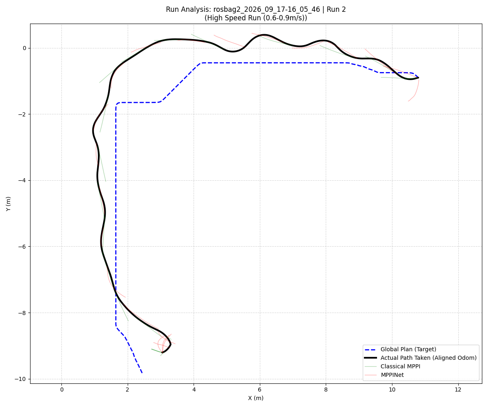
Run Spatial
To ensure our inference node could run sustainably on edge hardware without starving the underlying ROS 2 navigation stack, we recorded resource utilization during active inference.
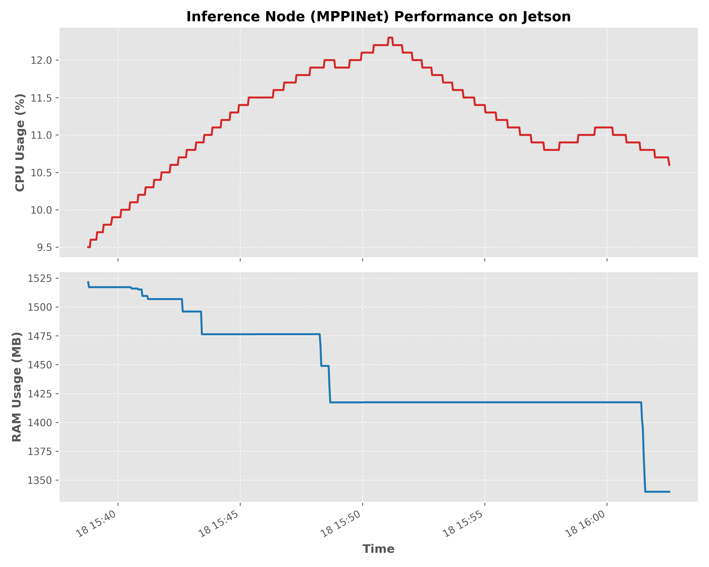
Jetson Performance
Key Observations:
- CPU Utilization: The OccupancyNet inference node consumes an average of 11.19% CPU, peaking at only 12.30%. This is highly efficient and leaves ample compute headroom for DLIO, ICP, and the Nav2 global planner to execute concurrently.
- Memory Footprint: System RAM usage remained remarkably stable, averaging 1.44 GB with a peak of 1.52 GB. On the Jetson’s unified memory architecture, this footprint encompasses both the application overhead and the PyTorch model weights/activations. This compact memory profile proves that the
src4 model is exceptionally well-suited for edge deployment on SWaP-constrained robotic platforms.
6. Future Prospects: End-to-End, Perception-Conditioned Docking
The current multi-point alignment sequence (YOLO detection followed by a rigid 3-point kinematic routine) will be replaced with an end-to-end learned docking controller. The policy will couple perception directly to motion execution by conditioning trajectory generation on visual features and perception uncertainty.
1. Perception-to-Trajectory Coupling
Instead of using a state machine to generate intermediate geometric waypoints from static detections, the YOLO pallet detection outputs feed directly into the controller network:
- State MLP Extension: The estimated pallet target pose [xp, yp, θp] in the ego-frame is continuously passed alongside kinematics [v, ω] into the State MLP.
- Spatial Feature Conditioning: Pallet bounding masks and pockets are rasterized into the ego-centric grid space, allowing the ResNet backbone to reason about physical slot margins alongside obstacle clearance.
2. Conditioning on Perception Uncertainty
Real-world pallet detection degrades under variable lighting, distance, and occlusions. To prevent error compounding, the controller is conditioned directly on detector uncertainty:
- Uncertainty Inputs: The State MLP ingests the detector confidence c ∈ [0,1] and spatial covariance &Sigma
- Learned Risk Mitigation:
- High Uncertainty: The policy defaults to cautious deceleration, generating waypoints that maintain sensor sightlines while delaying aggressive alignment turns.
- Low Uncertainty: As the vehicle nears the pallet and covariance drops, the policy commits to tight, continuous reversing maneuvers into the pocket.
3. Simulating Perception Uncertainty in Isaac Sim
To bridge the sim-to-real gap, perception noise will be modeled synthetically during training in Isaac Sim:
- Distance & Angle Noise Inversion: Pose covariance Σ will be injected into ground-truth Isaac Sim bounding boxes as a function of range and viewing angle
- Synthetic Occlusion & Dropouts: Pallet masks and confidence metrics will undergo random channel dropouts and synthetic feature noise during simulation runs to train the policy to recover gracefully from transient detection loss.